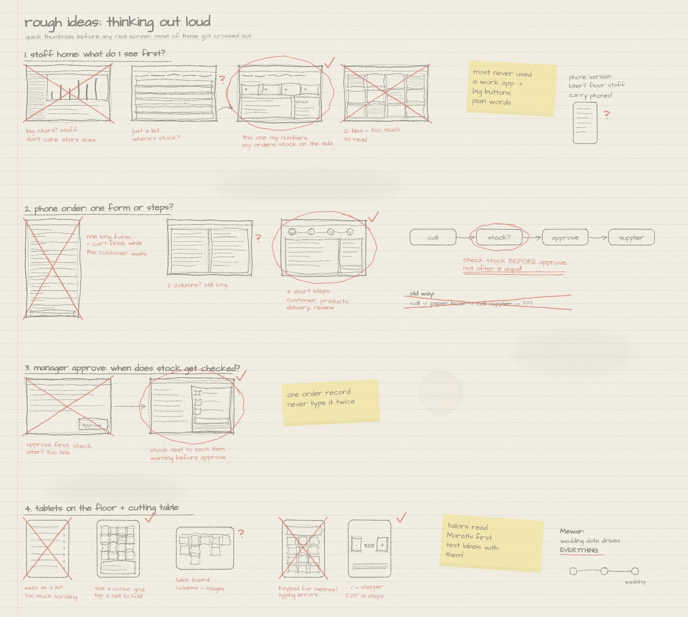
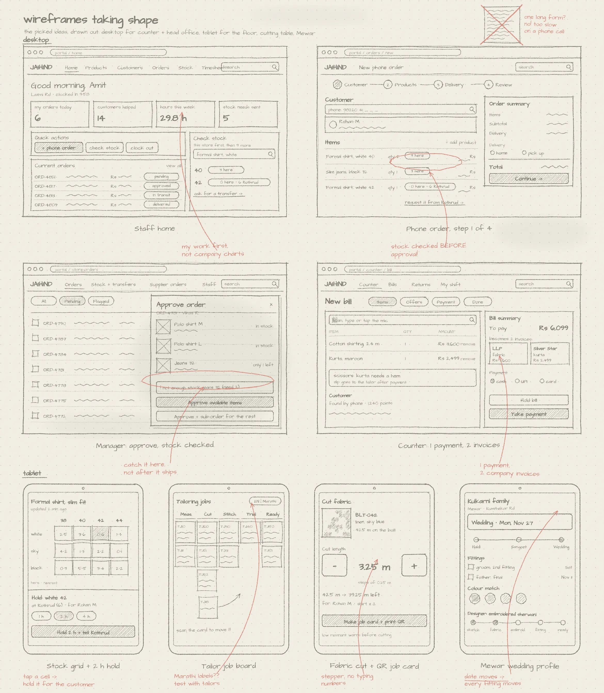
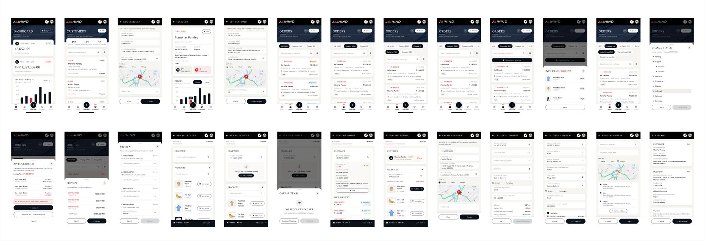
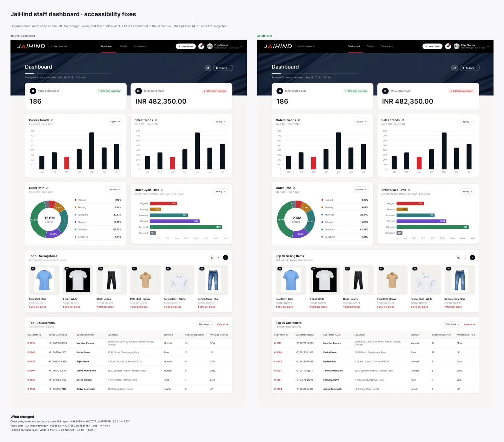
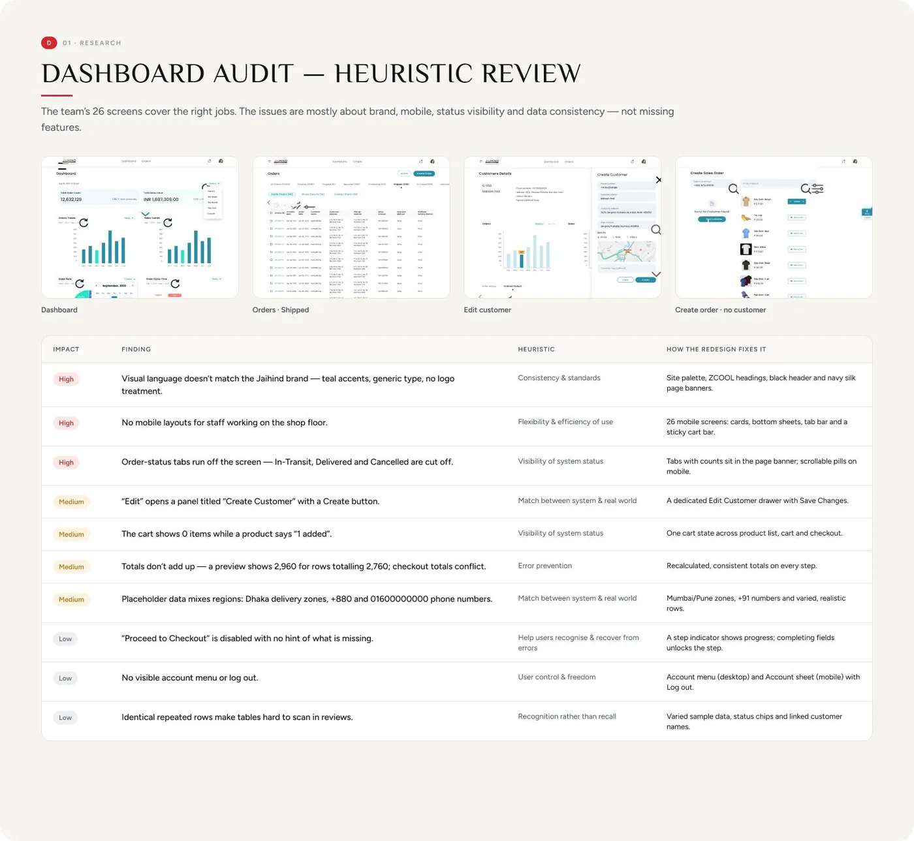

One record
Enter each order once, so copies can't disagree.
B2B internal tool · Case study 03
One role-based portal replacing phone calls, paper books and 5 systems, with 27% fewer employee errors.

A whole day for 2 or 3 orders
Every order took the same route. A customer called the store, staff wrote it in a paper book, then called the supplier, one call at a time. Each person tracked their own orders, so nobody saw the full picture. Stock in other stores, tailoring status and vouchers were just as hard to see.
Staff were good at their jobs. The tools were the problem.
Observed staff in their stores, mapped every handoff, and designed one portal where each role starts from its own work and every record is entered once.
Enter each order once, so copies can't disagree.
Catch stock problems before an order moves, not after.
Finish an order while the customer is still waiting.
Before drawing a screen, I visited 5 of the 10 stores, and our design team covered all 10. We ran 35+ contextual inquiries and usability evaluations with associates, cashiers, tailors, managers and merchandisers, mapped every handoff, and turned what we saw into 30+ functional requirements.
How this project moved from the mess to a decision. Each stage lists only what was actually done.
Before drawing a screen, I visited 5 of the 10 stores, and our design team covered all 10. We ran 35+ contextual inquiries and usability evaluations with associates, cashiers, tailors, managers and merchandisers, mapped every handoff, and turned what we saw into 30+ functional requirements.
From store visits to a shipped portal
Where one order lived
Before: phone, paper and 5 systems
Typed many times, copies don't match
After: 1 order record
1 place, one version of the truth
One order, typed many times
The same order went into more than one place, so copies didn't match. Entering it once became the rule every screen followed.2 to 3 orders a day
7 to 8 orders a day


Dropped
It was quicker to tap, but stock problems showed up after the order had already moved. Checking first prevents the wrong order instead of fixing it.
Dropped
Staff take orders standing at the counter or on a call. A long form can't be finished while someone waits.
One record behind every role
One order, four statuses everyone can see
An order moves through Pending, Approved, In transit and Delivered in one place, so nobody has to call around to find it.
✓ 5 systems became 1
The portal checks stock first, so a problem is caught before the order moves instead of after.
✓ Stock problems caught before the order moves
Four short steps replace one long form, so staff finish while the customer waits at the counter or on the line.
✓ About 5 min per order, down from 10 to 15

Phone screens: new order steps, delivery map and order status.
If the caller isn't in the system, staff add them right inside the order, so nobody hits a "No customer found" dead end.
✓ Part of the 4-step order
Staff used to struggle to find an old customer's address or to update customer and catalog records. Now they search one database and edit it in place.
✓ 27% fewer employee errors
Sizes and colours sit side by side, with this store, the nearest store and the total in each cell. One tap holds an item at another store for 2 hours, and that store sees the hold straight away.
A mixed cart of fabric and readymade garments splits into one invoice per company automatically, so the cashier takes a single payment and the books stay separate.
Every gift voucher and New-for-Old credit shows where it was issued, where it was used and what is left, so a voucher can't be used twice.
Staff scan the bolt and enter the cut with a stepper. A QR job card then follows the garment from Measured to Ready, so the counter can see where a job is without calling the tailor.
One family profile holds wedding dates, measurement history, colour matches and outside designer milestones. If the wedding date moves, every fitting moves with it and everyone involved is told.
A colour-coded badge in every header shows which of the three companies a screen belongs to. Accounts sees all three together and gets the GST document a transfer between companies needs.
Head office sees the festival and wedding season calendar against sell-through by store and category, and plans buying before each peak.
A shared Figma library covers desktop, tablet and phone, JaiHind and Mewar themes, and English and Marathi, with touch steppers, undo and offline saving for first-time users.
✓ 591+ screens from one library
The reasoning behind the screen: visual design, accessibility and the design system it was built on. Contrast figures are measured from the final screens; any gap is fixed in the Figma file and shown before and after.
New Order is the most frequent task at the counter, so it sits in the header on desktop and in the centre of the phone's bottom bar.
Managers glance at the dashboard between customers. Big figures on white cards with a short label read in a second.
Each order status has a fixed colour (Flagged red, Pending amber, Approved teal, Shipped purple, Delivered green, Cancelled grey), and every colour sits next to its word and percentage.
Staff move between the shop-floor tablet, the office desktop and their phone, so the dashboard reflows without changing what anything means.
Staff work on their feet, often with a customer waiting. The bottom bar uses large, labelled targets instead of small icons.

Built for this platform: desktop, tablet and phone, JaiHind and Mewar themes, English and Marathi, with touch steppers and undo. 591+ screens came from one library.
I also designed the navigation and information architecture of the public website. The pages have been restyled since, but the menu still runs on the structure below.
Home
Corporate
Tap a group to open it.
Everything a shopper or job seeker needs sits behind 6 labels, so the menu fits one phone screen without scrolling.
Collections opens straight into 8 categories, including custom tailoring, so a shopper reaches any category in 2 taps.
JaiHind and its sister brand Mewar each get their own page under Brands instead of competing on the home page.
Legacy, awards, history and CSR live under About, so they don't crowd the shopping path.
Source: the live menu on jaihindretail.com (opens in a new tab), read November 2026.
Workflows are people, not screens
The slow parts were the handoffs between teams, which no single team could see until we mapped them.
5 systems became 1
27% fewer employee errors
About 5 min per order, down from 10 to 15
| Measure | Before | After |
|---|---|---|
| Orders sent to suppliers a day | 2 to 3 | 7 to 8 |
| Time to record the day's orders | A full day | Half a day |
| Time to place one order | 10 to 15 min on a call | About 5 min |
| Missing stock | Found after the order moved | Seen before approval |
| Employee errors | Baseline | 27% fewer |
| Systems to move one order | 5 | 1 |
| Platform adoption | Baseline | +40% |
| Task completion time, core workflows | Baseline | 35% faster |
After launch we audited the live portal against 10 usability heuristics and logged each finding with a fix.
Orders sent to suppliers in a day

Design for the least sure user: big buttons, plain words and Marathi labels helped people who had never used a work app.
Ideas, not built.
An agent drafts supplier reorders from stock and sales, with the reason on every draft ("Sold 14 this week, 3 left"). Staff approve every one.
Figma: all 34 flows, recreated with sample data (opens in a new tab)
Questions or feedback on this case study? manche.siddhi@gmail.com
Next project
HCI course · Gov tech · AccessibilityTaking the IRS app's usability from 31 to 78